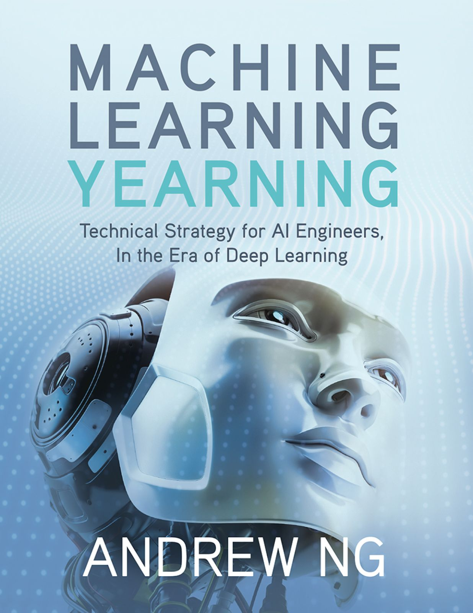

class: center, middle # Machine Learning Yearning  --- # Author The author Andrew Ng founded and lead the Google Brain project, led Baidu's AI group. Cofounded Coursera and more. The guy is basically an AI. --- # My Key Takeaways from the Book 1.0. Split your data. 2.0. Establish a single-number evaluation metric for your team to optimize. 3.0. Build your first system quickly, then iterate. 4.0. Error Analysis. 5.0 Comparing to human-level performance. --- # Example troughout the book: Building a cat picture startup <center> </center> Say you’re building a startup that will provide an endless stream of cat pictures to cat lovers. But tragically, your learning algorithm’s accuracy is not yet good enough. You are under tremendous pressure to improve your cat detector. Your team has a bunch of good ideas but if you choose poorly, you might waste months. How do you proceed? This book will tell you how. --- # 1.0. Split your data. Your team gets a large training set by downloading pictures of cats (positive examples) and non-cats (negative examples) off of different websites. They split the dataset 70%/30% into training and test sets. Using this data, they build a cat detector that works well on the training and test sets. But when you deploy this classifier into the mobile app, you find that the performance is really poor! -- --- # 1.0. Split your data. What happened? You figure out that the pictures users are uploading have a different look than the website images that make up your training set: Users are uploading pictures taken with mobile phones, which tend to be lower resolution, blurrier, and poorly lit. Since your training/test sets were made of website images, your algorithm did not generalize well to the actual distribution you care about: mobile phone pictures. --- # 1.0. Split your data. We usually define: • Training set — Which you run your learning algorithm on. • Dev (development) set — Which you use to tune parameters, select features, and make other decisions regarding the learning algorithm. Sometimes also called the **hold-out cross validation set**. • Test set — which you use to evaluate the performance of the algorithm, but not to make any decisions regarding what learning algorithm or parameters to use. <center> </center> -- >*Choose dev and test sets to reflect data you expect to get in the future and want to do well on.* --- # 1.0. Your dev and test sets should come from the same distribution You have your cat app image data segmented into four regions, based on your largest markets: (i) US, (ii) China, (iii) India, and (iv) Other. To come up with a dev set and a test set, say we put US and India in the dev set; China and Other in the test set. In other words, we can randomly assign two of these segments to the dev set, and the other two to the test set, right? -- Once you define the dev and test sets, your team will be focused on improving dev set performance. Thus, the dev set should reflect the task you want to improve on the most: To do well on all four geographies, and not only two. <img src="images/wrong.png" width="200"> --- # 1.0. How large do the dev/test sets need to be? -- - The old heuristic of a 70%/30% train/test split does not apply for problems where you have a lot of data; the dev and test sets can be much less than 30% of the data. -- - Your dev set should be large enough to detect meaningful changes in the accuracy of your algorithm, but not necessarily much larger. -- For example, if classifier A has an accuracy of 90.0% and classifier B has an accuracy of 90.1%, then a dev set of 100 examples would not be able to detect this 0.1% difference. -- - Your test set should be big enough to give you a confident estimate of the final performance of your system. --- # 2.0. Establish a single-number evaluation metric for your team to optimize. Classification accuracy is an example of a **single-number evaluation metric**. -- In contrast, Precision and Recall is not a single-number evaluation metric: It gives two numbers for assessing your classifier. <center> </center> -- Here, neither classifier is obviously superior, so it doesn’t immediately guide you toward picking one. --- # 2.0. Establish a single-number evaluation metric for your team to optimize. During development, your team will try a lot of ideas about algorithm architecture, model parameters, choice of features, etc. Having a **single-number evaluation metric** such as accuracy allows you to sort all your models according to their performance on this metric, and quickly decide what is working best. Having a single-number evaluation metric speeds up your ability to make a decision when you are selecting among a large number of classifiers. It gives a clear preference ranking among all of them, and therefore a clear direction for progress. --- # 2.0. Establish a single-number evaluation metric for your team to optimize. If you really care about both Precision and Recall, I recommend using one of the standard ways to combine them into a single number like the f1-score or a naive average. -- Suppose you are separately tracking the accuracy of your cat classifier in four key markets: (i) US, (ii) China, (iii) India, and (iv) Other. This gives four metrics. By taking an average or weighted average of these four numbers, you end up with a single number metric. Taking an average or weighted average is one of the most common ways to combine multiple metrics into one. --- # 2.0. Optimizing and satisficing metrics Suppose you care about both the accuracy and the running time of a learning algorithm. You need to choose from these three classifiers: <center> <img src="images/running_time.png" width="100%"> </center> --- # 2.0. Optimizing and satisficing metrics It seems unnatural to derive a single metric by putting accuracy and running time into a single formula, such as: ``` accuracy - 0.5 * running_time ``` Here’s what you can do instead: First, define what is an “acceptable” running time. Lets say anything that runs in 100ms is acceptable. Then, maximize accuracy, subject to your classifier meeting the running time criteria. Here, running time is a **satisficing metric** —your classifier just has to be “good enough” on this metric, in the sense that it should take at most 100ms. Accuracy is the **optimizing metric**. -- ## My two cents For me it is easier to think of the optimizing and satisficing metrics as an objective function and constraints in an optimization problem, which is what it is. I think he is redefining some terms to broaden the audience of the book. --- # 3.0. Build your first system quickly, then iterate. Having dev/test sets and a single-number evaluation metric helps you quickly evaluate algorithms, and therefore iterate faster. Andrew Ng emphasizes throughout the book that it is crucial to iterate quickly since machine learning is an iterative process. 1. Start off with some *idea* on how to build the system. 2. Implement the idea in *code* . 3. Carry out an *experiment* which tells me how well the idea worked. (Usually my first few ideas don’t work!) Based on these learnings, go back to generate more ideas, and keep on iterating. This is an iterative process. The faster you can go round this loop, the faster you will make progress. <center> </center> --- # 4.0. Error Analysis. When you play with your cat app, you notice several examples where it mistakes dogs for cats. Some dogs do look like cats! A team member proposes incorporating 3rd party software that will make the system do better on dog images. These changes will take a month, and the team member is enthusiastic. Should you ask them to go ahead? <center> </center> --- # 4.0. Look at dev set examples to evaluate ideas 1. Gather a sample of 100 dev set examples that your system misclassified. I.e., examples that your system made an error on. 2. Look at these examples manually, and count what fraction of them are dog images. -- The process of looking at misclassified examples is called **error analysis**. **Error Analysis** refers to the process of examining dev set examples that your algorithm misclassified, so that you can understand the underlying causes of the errors. This can help you prioritize projects — as in this example — and inspire new directions. -- ## My two cents I don't know what this process is called but I know you would do similar thing following a statistical approach; where you would check for normality of the residuals in a LR model via QQ-plots or tests, autocorrelation of residuals, ... --- # 4.0. Evaluating multiple ideas in parallel during error analysis. Your team has several ideas for improving the cat detector: - Fix the problem of your algorithm recognizing dogs as cats. - Fix the problem of your algorithm recognizing great cats (lions, panthers, etc.) as house cats (pets). - Improve the system’s performance on blurry images. -- You can efficiently evaluate all of these ideas in parallel. I usually create a spreadsheet and fill it out while looking through ~100 misclassified dev set images. I also jot down comments that might help me remember specific examples. <center> </center> --- # 4.0. Evaluating multiple ideas in parallel during error analysis Suppose you finish carrying out error analysis on 100 misclassified dev set examples and get the following: <center> </center> -- You now know that working on a project to address the Dog mistakes can eliminate 8% of the errors at most. Working on Great Cat or Blurry image errors could help eliminate more errors. Therefore, you might pick one of the two latter categories to focus on. If your team has enough people to pursue multiple directions in parallel, you can also ask some engineers to work on Great Cats and others to work on Blurry images. --- # 4.0. If you have a large dev set, split it into two subsets, only one of which you look at Suppose you have a large dev set of 5,000 examples in which you have a 20% error rate. Thus, your algorithm is misclassifying ~1,000 dev images. It takes a long time to manually examine 1,000 images, so we might decide not to use all of them in the error analysis. -- Consider splitting the dev set into an **Eyeball** dev set, which you will manually examine, and a **Blackbox** dev set, which you will not manually examine. If performance on the Eyeball dev set is much better than the Blackbox dev set, you have overfit the Eyeball dev set and should consider acquiring more data for it. <center> <img src="images/eye.png" width="200"> </center> --- # 4.0. If you have a large dev set, split it into two subsets, only one of which you look at Why do we explicitly separate the dev set into Eyeball and Blackbox dev sets? Since you will gain intuition about the examples in the Eyeball dev set, you will start to overfit the Eyeball dev set faster. If you see the performance on the Eyeball dev set improving much more rapidly than the performance on the Blackbox dev set, you have overfit the Eyeball dev set. You can use the **Blackbox dev set** to evaluate classifiers automatically by measuring their error rates. You can also use it to select among algorithms or tune hyperparameters. However, you should avoid looking at it with your eyes. <center> <img src="images/eye.png" width="200"> </center> --- # How big should the Eyeball and Blackbox dev sets be? The Eyeball dev set should be big enough so that your algorithm misclassifies enough examples for you to analyze (For example, I’ve rarely seen anyone manually analyze more than 1,000 errors.). A Blackbox dev set of 1,000-10,000 examples is sufficient for many applications. Between the Eyeball and Blackbox dev sets, I consider the Eyeball dev set more important (assuming that you are working on a problem that humans can solve well and that examining the examples helps you gain insight). If you only have an Eyeball dev set, you can perform error analyses, model selection and hyperparameter tuning all on that set. The downside of having only an Eyeball dev set is that the risk of overfitting the dev set is greater. <center> <img src="images/eye.png" width="200"> </center> --- # 5.0 Comparing to human-level performance. There are several reasons building an ML system is easier if you are trying to do a task that people can do well: 1. **Ease of obtaining data from human labelers.** For example, since people recognize cat images well, it is straightforward for people to provide high accuracy labels for your learning algorithm. -- 2. **Error analysis can draw on human intuition.** Suppose a speech recognition algorithm is doing worse than human-level recognition. Say it incorrectly transcribes an audio clip as “This recipe calls for a pear of apples,” mistaking “pair” for “pear.” You can draw on human intuition and try to understand what information a person uses to get the correct transcription, and use this knowledge to modify the learning algorithm. -- 3. **Use human-level performance to estimate the optimal error rate and also set a “desired error rate.”** Suppose your algorithm achieves 10% error on a task, but a person achieves 2% error. Then we know that the optimal error rate is 2% or lower and the avoidable bias is at least 8%. Thus, you should try bias-reducing techniques. --- # 5.0 Comparing to human-level performance. There are some tasks that even humans aren’t good at. With these applications, we run into the following problems: -- 1. **It is harder to obtain labels.** For example, it’s hard for human labelers to annotate a database of users with the “optimal” book recommendation. If you operate a website or app that sells books, you can obtain data by showing books to users and seeing what they buy. If you do not operate such a site, you need to find more creative ways to get data. -- 2. **Human intuition is harder to count on.** For example, pretty much no one can predict the stock market. So if our stock prediction algorithm does no better than random guessing, it is hard to figure out how to improve it. -- 3. **It is hard to know what the optimal error rate and reasonable desired error rate is.** Suppose you already have a book recommendation system that is doing quite well. How do you know how much more it can improve without a human baseline? --- # 5.0 How to define human-level performance Suppose you are working on a medical imaging application that automatically makes diagnoses from x-ray images. A typical person with no previous medical background besides some basic training achieves 15% error on this task. A junior doctor achieves 10% error. An experienced doctor achieves 5% error. And a small team of doctors that discuss and debate each image achieves 2% error. Which one of these error rates defines “human-level performance”? --- # 5.0 How to define human-level performance In this case, I would use 2% as the human-level performance proxy for our optimal error rate. You can also set 2% as the desired performance level because all three reasons from the previous chapter for comparing to human-level performance apply: -- 1. **Ease of obtaining labeled data from human labelers.** You can get a team of doctors to provide labels to you with a 2% error rate. -- 2. **Error analysis can draw on human intuition.** By discussing images with a team of doctors, you can draw on their intuitions. -- 3. **Use human-level performance to estimate the optimal error rate and also set achievable “desired error rate.”** It is reasonable to use 2% error as our estimate of the optimal error rate. The optimal error rate could be even lower than 2%, but it cannot be higher, since it is possible for a team of doctors to achieve 2% error. In contrast, it is not reasonable to use 5% or 10% as an estimate of the optimal error rate, since we know these estimates are necessarily too high.